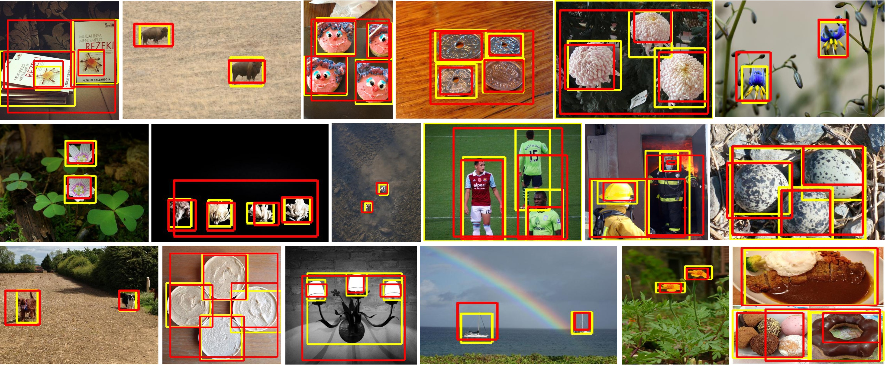

|
Elena SizikovaMoore Sloan Faculty FellowCenter for Data Science (CDS) New York University (NYU) Computer Vision and Medical Imaging Researcher Email: es5223 (at) nyu.edu |
About Me
I am a Moore Sloan Faculty Fellow in the Center for Data Science (CDS) in New York University. I completed my PhD in the Graphics/Vision Lab in Princeton CS department, advised by
Prof. Thomas Funkhouser.
I'm interested in applications of computer vision to medical imaging and perception, 3D reconstruction and visual understanding tasks, partic.
Here is my CV.
Prior to graduate school, I tried tackling bioinformatics problems with genetic algorithms, helped design a tool helping drug design researchers find protein-ligand binding sites, and worked on multilingual search algorithms.
Prior to graduate school, I tried tackling bioinformatics problems with genetic algorithms, helped design a tool helping drug design researchers find protein-ligand binding sites, and worked on multilingual search algorithms.
Recent News
- November 2021: "TCN: Pioneering Topological-based Convolutional Networks for Planetary Terrain Learning" accepted to IAAI 2022!
- September 2021: "Large-Scale Unsupervised Object Discovery" accepted to NeurIPS 2021!
- August 2021: "Improving Tuberculosis (TB) Prediction using Synthetically Generated Computed Tomography (CT) Images" accepted to ICCV Computer Vision for Automated Medical Diagnosis (CVAMD) Workshop 2021!
- July 2021: I am a website coordinator sub-chair for the Machine Learning for Health (ML4H) Conference 2021!
- July 2021: "Semi-supervised Nonnegative Matrix Factorization for Document Classification" accepted to Asilomar Conference on Signals, Systems and Computers 2021!
- March 2021: "Improving Weakly Supervised Lesion Segmentation using Multi-Task Learning" accepted to Medical Imaging with Deep Learning (MIDL) Conference 2021!
- December 2020: Selected as a Rising Star in Engineering in Health in Columbia University Bioengineering!
- October 2020: "Learning to Infer Semantic Parameters for 3D Shape Editing" accepted to 3DV 2020!
- June 2020: I am a mentor for CVPR Women in Computer Vision (WICV) Workshop 2020!
- May 2020: Awarded Elsevier/Vision Research Travel Award for the Vision Sciences Society 2020 meeting!
- May 2020: Interviewed for Medium article for CDS blog, see here!
- May 2020: Awarded NYU Center For Data Science/DS3/Moore Sloan grant for project titled: "Interpretable Tensor Factorization Methods for COVID-19 Progression Analysis"!
- February 2020: I am a mentor for the TryAI workshop at AAAI-20!
- February 2020: VSS 2020 submission about comparing human and machine vision on noisy reading task accepted!
- September 2019: Started as a faculty fellow in NYU Center for Data Science!
- July 2019: Defended!
- March 2019: Co-organizing CVPR 2019 Women in Computer Vision Workshop WiCV! [Webpage]
- March 2019:I'm in the technical/program committee for CVPR 2019 Workshop Deep Learning for Geometric Shape Understanding! [Competition][Arxiv]
- February 2019: "3D Organ Shape Reconstruction from Topogram Images" accepted to Information Processing in Medical Imaging (IPMI) 2019!
- January 2019: "Learning A Stroke-Based Representation for Fonts" will be presented at Eurographics 2019!
Current Courses
Instructor, DS-GA 3001, Introduction to Computer Vision, New York University, Spring 2022. Website
Recent Projects and Publications
|
Ajay Subramanian, Elena Sizikova, Omkar Kumbhar, Najib Majaj, Denis G. Pelli |

|
Yuzhou Chen, Yuliya Marchetti, Elena Sizikova, Yulia R. Gel |
|  |
Huy V. Vo, Elena Sizikova, Cordelia Schmid, Patrick Pérez, Jean Ponce |

|
Ashia Lewis, Evanjelin Mahmoodi, Yuyue Zhou, Megan Coffee, Elena Sizikova |
|
Jamie Haddock, Lara Kassab, Sixian Li, Alona Kryshchenko, Rachel Grotheer, Elena Sizikova, Chuntian Wang, Thomas Merkh, R. W. M. A. Madushani, Miju Ahn, Deanna Needell, Kathryn Leonard |

|
Tianshu Chu*, Xinmeng Li*, Huy V Vo, Ronald M Summers, Elena Sizikova |
|
Omkar Kumbhar, Elena Sizikova, Najib J. Majaj, Denis G. Pelli |

|
Sahar Siddiqui, Elena Sizikova, Gemma Roig, Najib J. Majaj, Denis G. Pelli |
|
Fangyin Wei, Elena Sizikova, Avneesh Sud, Thomas Funkhouser, Szymon Rusinkiewicz |
|
Elena Sizikova, Carol Long, Omkar Kumbhar, Najib Majaj, Denis Pelli |

|
Miju Ahn, Nicole Eikmeier, Jamie Haddock, Lara Kassab, Alona Kryshchenko, Kathryn Leonard, Deanna Needell, R. W. M. A. Madushani, Elena Sizikova, Chuntian Wang |

|
Elena Sizikova |
|
|
|
|
|
|
|
|

|
E. Balashova, V. Singh, B. Teixeira, J. Wang, T. Chen, T. Funkhouser. |

|
B. Teixeira, V. Singh, K. Ma, B. Tamersoy, T. Chen, Y. Wu, E. Balashova, D. Comaniciu. |

|
E. Sizikova, T. Funkhouser. |

|
A. Stank, D.B. Kokh, M. Horn, E. Sizikova, R. Neil, J. Panecka, S. Richter, R.C. Wade. |

|
E. Sizikova, V. K. Singh, B. Georgescu, M. Halber, K. Ma, T. Chen. |

|
E. Sizikova, T. Funkhouser. |

|
E. Sizikova, T. Funkhouser. |
|
O. Fried, S. Di Verdi, M. Halber, E. Sizikova, A. Finkelstein. |
|

|
C. Quaranta*, I. A. Ibarra*, E. Schwartz*, E. Sizikova*. |
|
R. Lyngsøe, J. Anderson, E. Sizikova, A. Badugu, T. Hyland and J. Hein. |
|
Teaching
- Instructor, DS-GA 3001, Introduction to Computer Vision, New York University, Spring 2022. Website
- NYU AI School 2022, Deep Learning I: Computer Vision Lecturer. Website
- Instructor, CDS Capstone Project and Presentation Course, New York University, Fall 2021.
- Instructor, DS-GA 3001, Introduction to Computer Vision, New York University, Spring 2021. Website
- Instructor, CDS Capstone Project and Presentation Course, New York University, Fall 2020.
- Instructor, CDS Capstone Project and Presentation Course, New York University, Fall 2019.
- Teaching Assistant, COS 424, Fundamentals of Machine Learning, Princeton University, Spring 2016.
- Teaching Assistant, COS 226, Algorithms and Data Structures, Princeton University, Fall 2015.
Select Work Experience
- Moore Sloan Faculty Fellow/Assistant Professor in NYU Center for Data Science (CDS), New York, NY September 2019 - Present
- Research Intern in Siemens Healthcare, Vision Technologies and Solutions (VTS), Princeton, NJ, Summer, Fall 2017
- Research Intern in Creative Technologies Lab (CTL), Adobe Research, Seattle, WA, Summer 2016
- Research Intern in Siemens Healthcare, Vision Technologies and Solutions (VTS), Princeton, NJ, Summer 2015 - Spring 2016
- Software Engineer Intern in Heidelberg Institute for Theoretical Studies (HITS) Molecular and Cellular Modelling (MCM) group, Summer 2013
- Project Manager of the USC Shoah Foundation Team, Research in Industrial Projects for Students (RIPS) Program, UCLA, Summer 2012
- Research Intern in Genome Analysis group, Oxford Summer School in Computational Biology, Summer 2011
Paper Reviewing
- International Conference on Medical Image Computing and Computer Assisted Intervention (MICCAI), 2022
- International Conference on Learning Representations (ICLR), 2022
- Winter Conference on Applications of Computer Vision (WACV), 2022
- Neural Information Processing Systems (NeurIPS), 2020, 2021
- Neural Information Processing Systems (NeurIPS) Datasets and Benchmarks Track, 2021
- International Conference on Computer Vision (ICCV), 2021
- Conference on Computer Vision and Pattern Recognition (CVPR), 2021
- Journal of Vision, 2021: Exceptional JOV Review Writer
- Multidisciplinary Digital Publishing Institute (MDPI), 2021
- Cognitive Science Society Conference (CogSci), 2021
- Heritage, 2020
- Journal on Computing and Cultural Heritage (JOCCH), 2020
- Computer Vision and Pattern Recognition (CVPR) Workshop on Deep Learning for Geometric Computing (DLGC), 2020
- Special Interest Group on Computer Graphics and Interactive Techniques (SIGGRAPH), 2020
- British Machine Learning Conference (BMVC), 2019
- Pacific Graphics (PG), 2018
- International Journal of Computer Vision (IET), 2017
- Journal of Computers & Graphics (CAG), 2016
- Shape Modelling International (SMI), 2014
Service and Volunteering
- Machine Learning for Health Conference (ML4H) 2021, Website Coordinator Sub-chair and Reviewer Mentor
- NYU Center for Data Science (CDS) Diversity and Inclusion Committee, Faculty Fellow Representative, Fall 2020
- NYU Center for Data Science (CDS) Summer Incubator Internship Program, Mentor, Spring 2020
- CVPR Women in Computer Vision (WICV) Workshop, Mentor, June 2020
- Try AI, Diversity and Inclusion Event at AAAI 2020, Mentor, February 2020
- Deep Learning for Geometric Shape Understanding (SkelNetOn) at CVPR 2019 Point SkelNetOn Keeper January 2019 - June 2019
- Women in Computer Vision Workshop (WiCV) at CVPR 2019 Organizer October 2018 - June 2019
- Graduate Women in Science and Engineering (GWISE) - NYU High School Conference Mentor. November 2018.
- AI-4ALL Summer camp in Princeton, NJ. AI-4ALL Summer camp Princeton, NJ. Summer 2018.
- Princeton University Math Club Mentoring Mobius Program Mentor, October 2016 - December 2016
- Teaching Assistant for Access Code Program HTML/CSS Workshop by Coalition for Queens (C4Q) in Brooklyn NY, February 2015
- University of Oxford Math and CS Representative, Math Undergraduate Representative Committee (MURC), October 2010 - June 2013
- University of Oxford Math and CS Representative, Oxford Salsa Society Webmaster, October 2010 - May 2013
Some Fun Things I Did
|
I made an educational game based on functional programming: TrainBox. |

|
|
I co-designed Princeton CS Sweatshirt logo in Spring 2017. The design was used to create sweatshirts for Princeton CS Department members. |

|